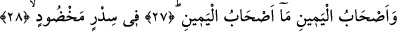
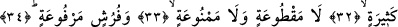
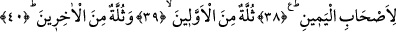
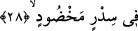

NE MUTLU
O SAĞDAKİLERE!
27. Sağdakiler, ne mutlu o sağdakilere!
28. Düzgün kiraz ağacı,
29. Meyveleri salkım salkım dizili muz ağaçları,
30. Uzamış gölgeler,
31. Çağlayarak akan sular,
32. Sayısız meyveler içindedirler;
33. Tükenmeyen ve yasaklanmayan.
34. Ve kabartılmış döşekler üstündedirler.
35. Gerçekten biz hûrileri apayrı biçimde yeni yarattık.
36. Onları, bâkireler kıldık.
37. Eşlerine düşkün ve yaşıt.
38. Bütün bunlar sağdakiler içindir.
39. Bunların birçoğu önceki ümmetlerdendir.
40. Birçoğu da sonrakilerdendir.
“Sağdakiler…” Önceki ayetlerde “mukarrebûn” grubunun halleri genişçe anlatılmıştı.
Bunun peşinden ise, daha önce durumları özetle anlatılan ashâb-ı yemînin fazîletli
halleri genişçe açıklanmaya başlanmaktadır.
“Ne mutlu o sağdakilere!” Yâni sen, sağdaki bu mutlu kişilerin faziletli nitelikleri ve
iyiliklerinin kemali sebebiyle ne büyük bir iyilik ve berekete kavuştuklarını bilemezsin.
28. Düzgün kiraz ağacı,